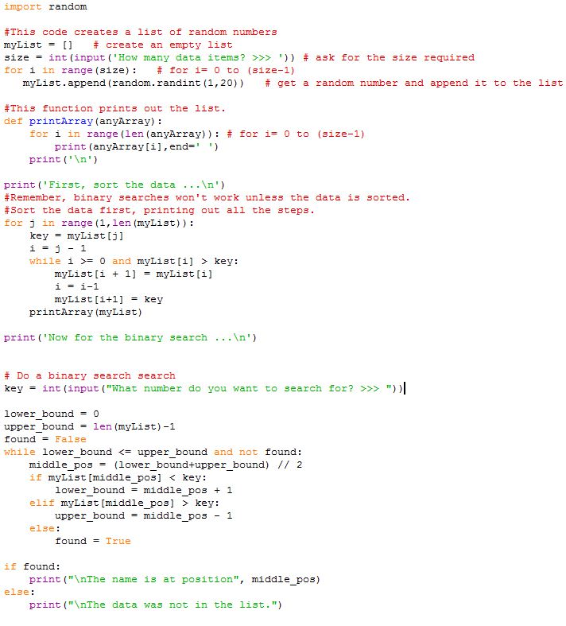

<div id="jsn-maincontent" class="span9 order1 row-fluid">
  <div id="jsn-maincontent_inner">
    <div id="jsn-centercol">
      <div id="jsn-centercol_inner">
        <div id="jsn-mainbody-content" class="jsn-hasmainbody">
          <div id="jsn-mainbody-content-inner1">
            <div id="jsn-mainbody-content-inner2">
              <div id="jsn-mainbody-content-inner3">
                <div id="jsn-mainbody-content-inner4" class="row-fluid">
                  <div id="jsn-mainbody-content-inner" class="span12 order1">
                    <div id="jsn-mainbody">
                      <div id="system-message-container"></div>

                      <div
                        class="item-page"
                        itemscope
                        itemtype="https://schema.org/Article"
                      >
                        <meta itemprop="inLanguage" content="en-GB" />

                        <div itemprop="articleBody">
                          <p></p>
                          <h1 style="text-align: center">
                            A binary search program in Python
                          </h1>
                          <p>
                            We have now worked through two explanations of how
                            binary searching works. It's time to write some
                            code!
                          </p>
                          <p>
                            <strong>Q1.</strong> Type in the following code and
                            get it working. This code generates a list of random
                            numbers and provides a function for printing out. We
                            know binary searching won't work unless the data is
                            sorted so we use one of our previous sorting
                            algorithms to sort the data. We then have the code
                            for the binary search.
                          </p>

                          <p>
                            <br /><strong>Q2.</strong> If you had to test the
                            code thoroughly, what tests would you carry out?
                            Write a list of the sorts of tests you ought to do,
                            identify any test data you will use, predict the
                            results of each test and then carry them out.
                          </p>
                          <p></p>
                        </div>
                      </div>
                    </div>
                  </div>
                </div>
              </div>
            </div>
          </div>
        </div>
      </div>
    </div>
  </div>
</div>
